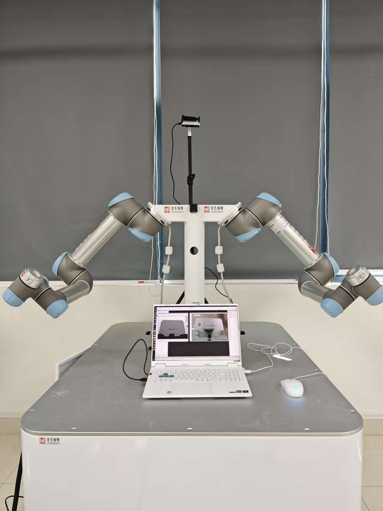
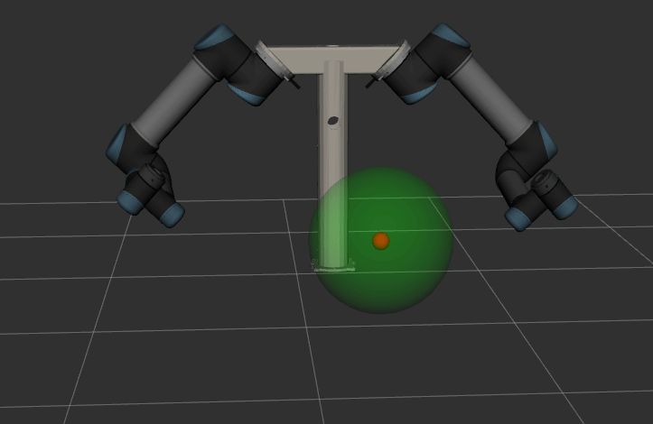
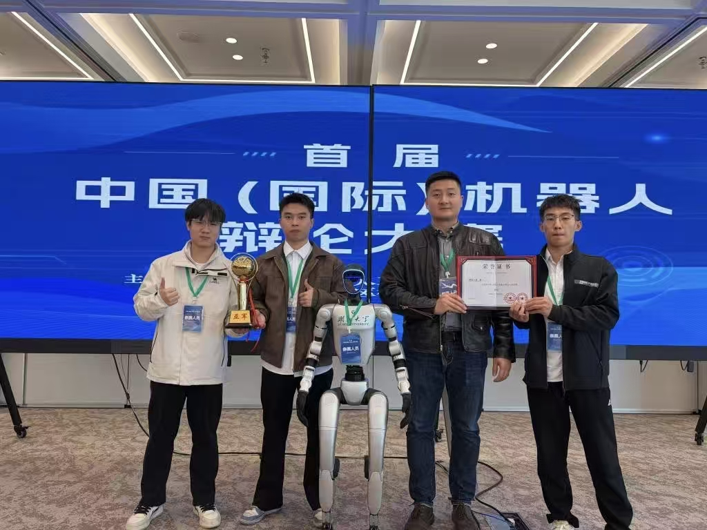
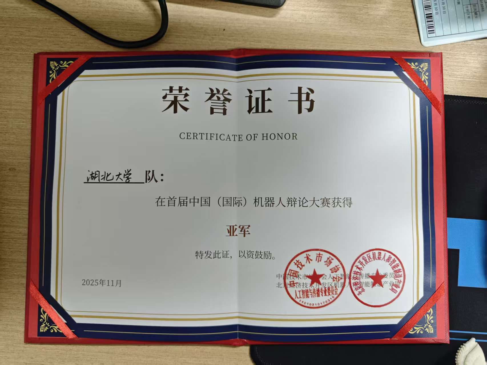
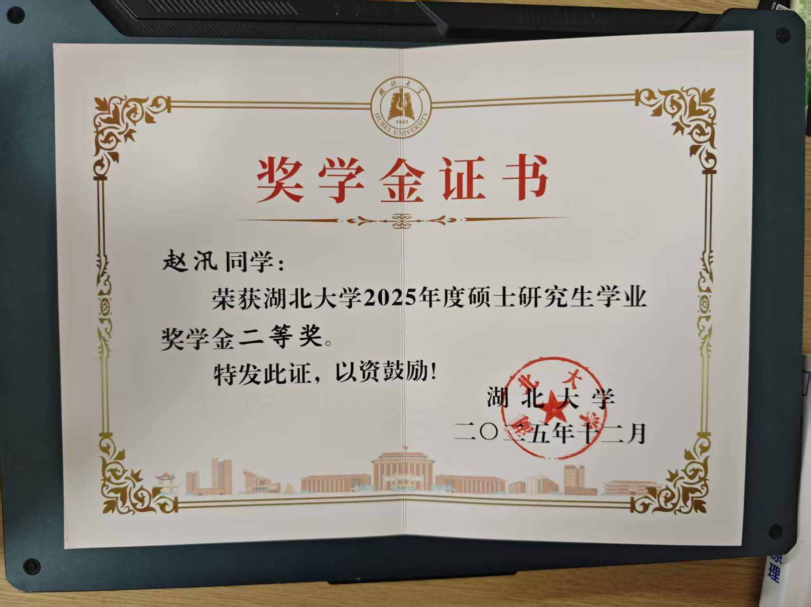

Research Direction
VLA / Embodied Manipulation
Academic Homepage
赵汛
湖北大学人工智能学院研究生｜研究方向：VLA、具身智能、强化学习与机械臂控制
我目前在湖北大学人工智能学院开展研究训练，依托 EILab，主要关注视觉语言行动模型、具身智能与强化学习机械臂控制。当前工作集中于双臂操作系统、仿真到真实部署，以及面向真实场景的感知与控制闭环。
About
Research Profile
我的研究围绕 Vision-Language-Action、具身智能 与 强化学习和机械臂控制 展开，重点关注视觉理解、动作生成、策略学习与机器人执行之间的衔接。
目前的工作重点包括双臂操作、多模态感知、语言条件决策，以及 Sim-to-Real 部署。我希望持续积累可复现、可扩展、面向真实系统的研究成果。
Research Interests
Future Papers
未来可能发布的文章
Updates
Recent Updates
Research
Selected Research
Featured Direction
Vision-Language-Action
Current Focus
Direction Snapshot
Research Pipeline
Key Highlights
Featured Project
Sim-to-Real
Dual_Arm_UR5
System Focus
Featured Research
zx2002430/Dual_Arm_UR5
从 MuJoCo 仿真到真实双臂 UR5 部署的完整研究链路
Project Snapshot
Research Pipeline
Key Highlights
Project Visuals
以下展示覆盖真实平台、仿真环境、控制实验与部署过程，均来自当前项目的实际实验记录。
Real System
Lab Photo

Simulation
MuJoCo

Visualization
ROS 2 + RViz

Control
Trajectory Tracking

MoveIt
Real Robot

Featured Module
智慧农业
Smart Agriculture Suite
Field Sensing to Platform Coordination
智慧农业专题入口
将农田感知、传输控制、可视化看板和研究材料整合为一组连续页面，适合在首页直接展示项目结构与当前推进重点。
四情监测
灌溉控制
数字化看板
Scenario Module
300 亩核心农田 / 四情监测 / 灌溉控制
从农田感知到平台联动的智慧农业系统展示
Module Snapshot
System Layers
Key Highlights
Systems
Selected Projects
Background
Education & Research
Community
Honors, Service & Skills
Selected Honors
National Scholarship, Outstanding Graduate, Competition Awards...
机器人辩论大赛亚军
学业奖学金二等奖
团队荣誉与个人荣誉
Team Photo
Competition

Certificate
Runner-up

Scholarship
Second Prize

Academic Service
Reviewer for conferences/journals, teaching assistant, student organizer...
《Python》课程助教
Teaching Assistant
- 负责实验课教学准备与课堂支持
- 负责作业布置、提交管理与批改反馈
- 参与考试监考、试卷命题与阅卷工作
《人工智能基础》课程助教
Teaching Assistant
- 协助实验内容准备、教学演示与答疑支持
- 承担作业布置、批改与学习情况跟踪
- 参与考试组织、监考、命题与试卷批改
Technical Stack
面向研究开发、模型训练与机器人系统部署，形成了较完整的实验与工程工具链。
用于日常研究开发、实验环境管理与论文材料整理。
用于模型训练、算力调用与多模态实验迭代。
用于机器人控制、仿真验证与系统级部署联调。
Contact
Contact
欢迎就 VLA、具身智能、强化学习与机器人操作等方向交流合作。我也将持续在此更新研究项目与阶段性进展。